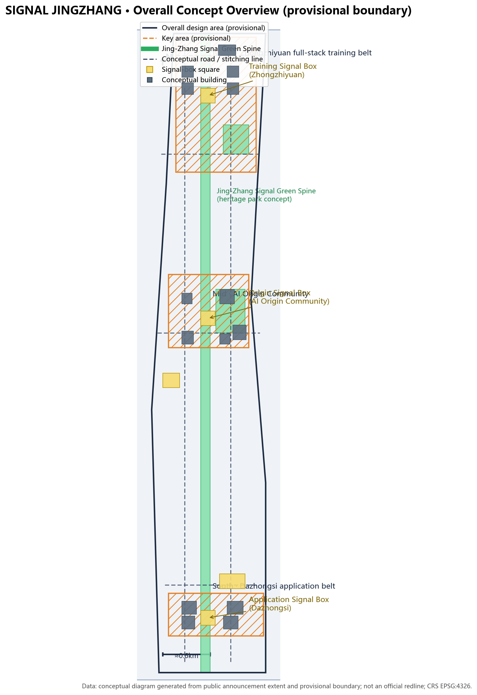
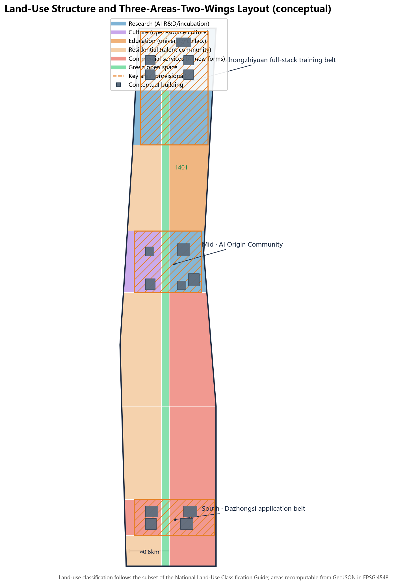
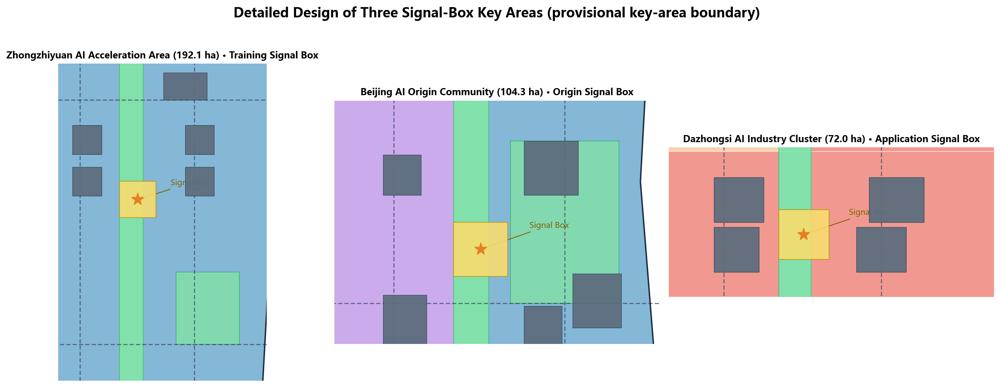
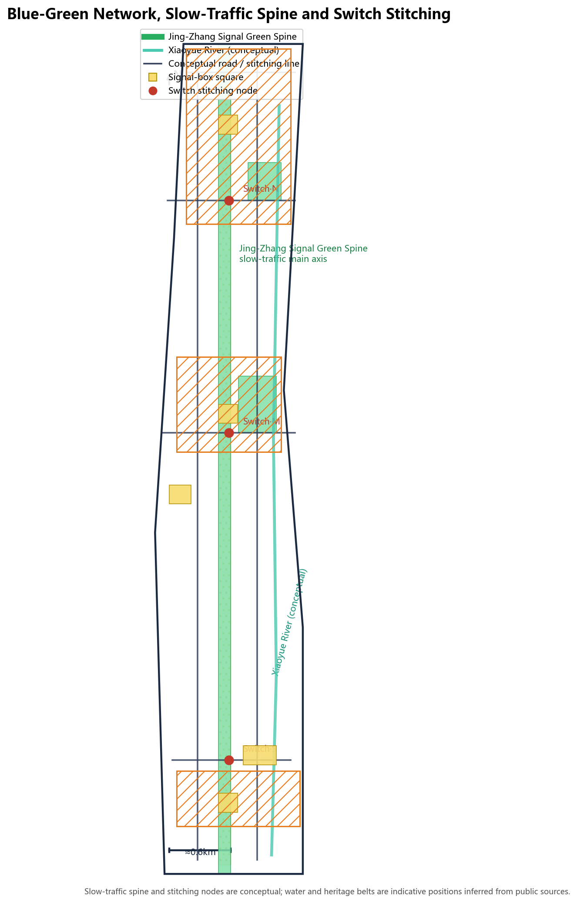
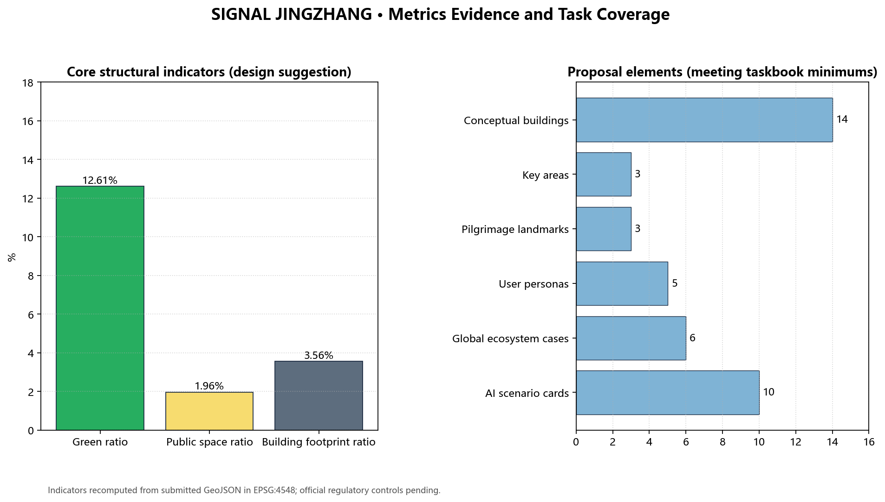

One Line · Three Signal Boxes · Switch Stitching — conceptual urban design for the Centennial Jing-Zhang AI Innovation Belt. All spatial proposals are conceptual, generated on the provisional boundary.

Coordinated research area 43.6km² · overall design area 11.4km² · key detailed-design area 368.4ha.

Three signal-box key areas and 21 land-use zones partitioning the full provisional site boundary.

Three signal-box key areas and 21 land-use zones partitioning the full provisional site boundary.

Slow-traffic main spine, three east-west stitching lines, Xiaoyue River blue-green base, signal-box squares.
Interlock: AI services bound to human review points. Block: the ~9.7km spine is divided into signal sections. Dispatch: three signal boxes dispatch training, public life and applications.

14 conceptual building footprints (approx. 0.406M m²) and the renewal project list with phasing.
Phasing: 2026-2029 Origin Community; 2029-2032 Zhongzhiyuan training belt; 2032-2035+ Dazhongsi and full corridor.
| # | Scenario card | Signaling mechanism |
|---|---|---|
| 1 | AI patrol companion trail | Green: patrol, human review |
| 2 | Model-evaluation open day | Yellow: reviewed publication |
| 3 | Open-source co-creation screen | Green: real-time |
| 4 | Smart-terminal street | Yellow: de-identified data |
| 5 | Delivery handover point | Red: auto-shutdown |
| 6 | AI cultural-tourism guide | Green: human complaint channel |
| 7 | AR railway tour | Yellow: heritage-reviewed |
| 8 | Smart-building energy | Yellow: public data |
| 9 | AI transfer guidance | Green: human fallback |
| 10 | AI-governance livestream | Red: unreviewed blocked |
Indicators recomputed from GeoJSON in EPSG:4548; official regulatory controls pending.
| Metric | Value | Unit |
|---|---|---|
| site_area_sqm | 1.14128e+07 | sqm |
| green_ratio | 0.126107 | ratio |
| public_space_ratio | 0.019616 | ratio |
| building_footprint_area_sqm | 405746 | sqm |
| spine_length_m | 9716.43 | m |
| ID | Task | Delivery |
|---|---|---|
| agent.1 | Overall concept / naming / logo | SIGNAL JINGZHANG naming and three-color signal logo |
| agent.2 | AI ecosystem | 6 global cases + six-element map |
| agent.3 | 10 scenario cards | Cards 1-10 with signaling |
| agent.4 | Test/validation scenarios | 3 scenarios + interlock sheet |
| agent.5 | User personas | 5 personas |
| agent.6 | Landmarks & operations | 3 landmarks + events |
Full mapping in compliance_matrix.json.
Public/cleared sources in sources.json; assumptions and data gaps in assumptions.json.
Deterministic · spatial · visual · professional gates — see self_check.json.